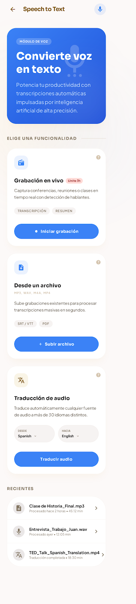
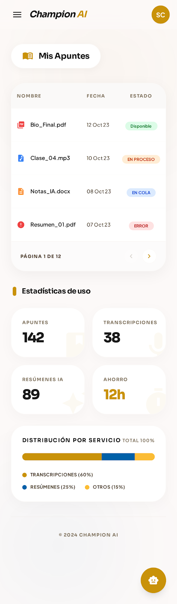

Speech to Text
Convierte voz en texto con precisión: grabación en vivo con detección de hablantes, carga de archivos de audio y traducción automática a más de 30 idiomas.
Champion AI reúne en un solo lugar la inteligencia artificial que necesitas para transformar tus apuntes, audios e imágenes en conocimiento listo para usar: transcripciones, resúmenes y mucho más, sin cambiar de app.
Champion AI busca facilitar el acceso a herramientas de inteligencia artificial que permitan a los usuarios procesar información de manera más rápida y eficiente: transformar contenido entre texto, audio y conocimiento estructurado, apoyando tareas que normalmente requieren tiempo o esfuerzo manual.
La plataforma está diseñada para evolucionar progresivamente, incorporando nuevas capacidades de inteligencia artificial a medida que el proyecto crece — pensada primero como experiencia mobile, construida sobre servicios de IA nativos de Microsoft Azure.
Transcripción de audio, texto a voz, análisis de contenido y generación de resúmenes automatizados.
Cargar contenido, procesarlo con IA y visualizar resultados — sin complejidad técnica de por medio.
Construido con metodología Scrum, en iteraciones cortas que avanzan funcionalidad por funcionalidad.
Arquitectura de APIs y servicios desacoplados, lista para integrar nuevas capacidades de IA sin fricción.
Potencia tu estudio con inteligencia artificial de vanguardia diseñada para ti.
Convierte voz en texto con precisión: grabación en vivo con detección de hablantes, carga de archivos de audio y traducción automática a más de 30 idiomas.
Escucha tus apuntes en voz natural. Convierte cualquier texto o documento en audio para repasar mientras haces otras cosas.
Sube una foto de un plano, diagrama o apunte y recibe un análisis constructivo y detallado generado por IA.
Modelos de lenguaje que analizan textos extensos y generan resúmenes y ejercicios listos para estudiar.
Organiza audios, textos y documentos en un solo lugar, con seguimiento del estado de cada proceso.


Champion AI está diseñado como un sistema basado en servicios y APIs, donde distintos componentes trabajan de forma desacoplada para integrar capacidades de inteligencia artificial.
React Native + Expo
Node.js + Express.js
Azure Function Apps · Python
PostgreSQL
Microsoft Azure AI Services
Las primeras funcionalidades priorizadas —texto a voz, voz a texto y generación automática de resúmenes— sientan las bases para evolucionar hacia un hub más amplio de herramientas basadas en IA.
Desarrollador Mobile React Native
Experto en Soluciones Salesforce
Tech Lead